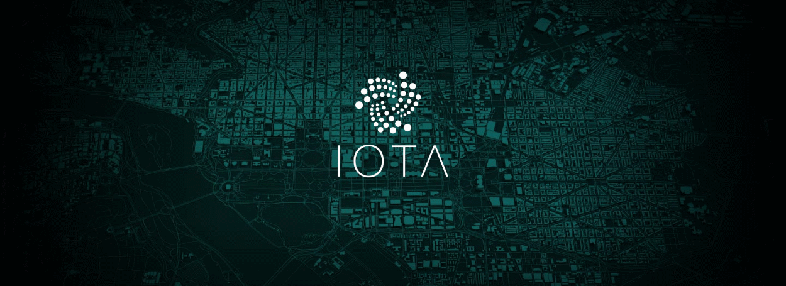

Welcome to the IOTA Hotspot
For access to the Internet, follow the steps below:
- Go to the IOTA Web Wallet
-
Send the IOTA Tokens to
- Use the IOTA Message to validate your purchase
Usage fee: 1 MIOTA (Mi) per 5 MBytes
Copyright © The Nodogsplash Contributors 2004-2019.
This software is released under the GNU GPL license.